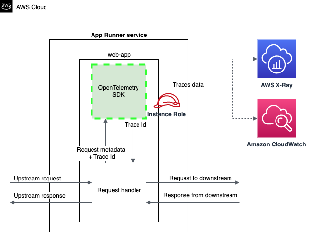

Papers
Upcoming
AWS Blogs
2025

Amazon SageMaker AI introduces EAGLE based adaptive speculative decoding to accelerate generative AI inference HTML
Authors: Andy Peng, Kareem Syed-Mohammed, Ram Vegiraju, Vinay Arora, Xu Deng, Siddharth Shah, Johna Liu, Anisha Kolla
Artificial Intelligence
2022

Horizontal Auto Scaling in Serverless Containers HTML
Author: Andy Peng

Enabling AWS X-Ray tracing for AWS App Runner service using AWS Copilot CLI HTML
Authors: Yang Wanxian and Andy Peng
Containers
AWS Blog
'">
AWS Blog
'">
Tracing an AWS App Runner service using AWS X-Ray with OpenTelemetry HTML
Author: Andy Peng
Containers